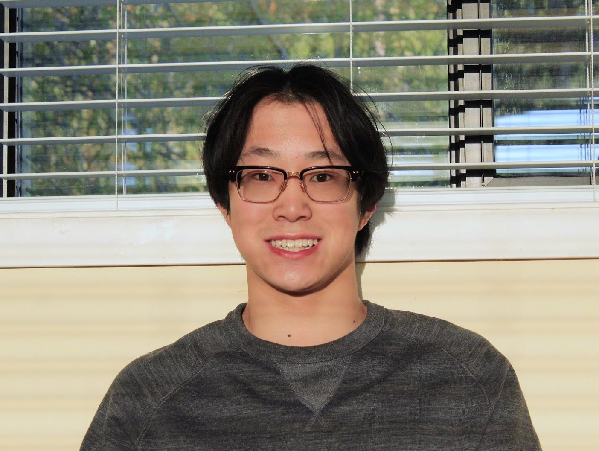

Some of my past projects:
Player vs Player / Player vs Computer TicTacToe


Recursively Drawing a Binary Tree

Hello!
My name is Adam Wang and I am a freshman at the Paul G. Allen School at the University of Washington.
more stuff here
Besides programming, I am passionate about photography (some of my photos)
Quick links: adamwang@uw.edu · my résumé · github
Some of my past projects:
Player vs Player / Player vs Computer TicTacToe
Recursively Drawing a Binary Tree